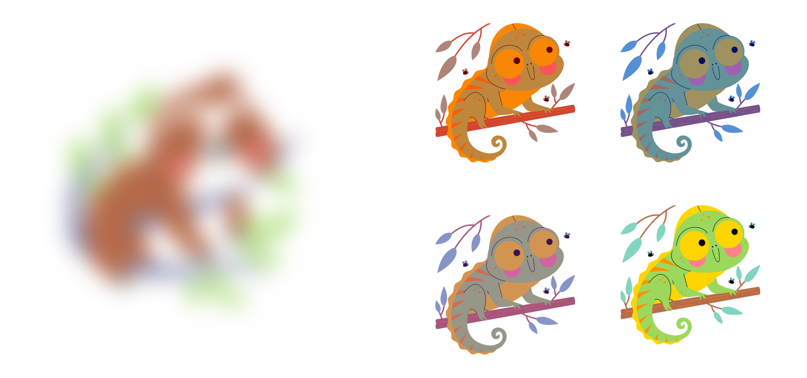

QML - Week 2
Inference, uncertainty and variability
1 Inference

2 Bilingual advantage: myth or reality?
. . .
3
5
7 Uncertainty and variability

Images by Stickers.
8
10 Many analysts, one data set
11 Many analysts, one data set

12 References
Coretta, Stefano, Joseph V. Casillas, Simon Roessig, Michael Franke, Byron Ahn, Ali H. Al-Hoorie, Jalal Al-Tamimi, et al. 2023. “Multidimensional Signals and Analytic Flexibility: Estimating Degrees of Freedom in Human-Speech Analyses.” Advances in Methods and Practices in Psychological Science 6 (3). https://doi.org/10.1177/25152459231162567.
Franck, Julie, Federico Faloppa, and Theodoros Marinis, eds. 2024. Myths and Facts about Multilingualism. Bilingualism Matters 1. New York: CALEC / TBR Books.
Garraffa, Maria, Antonella Sorace, Maria Vender, and John W. Schwieter. 2023. Bilingualism Matters: Language Learning Across the Lifespan. Cambridge ; New York, NY: Cambridge University Press.
Poarch, Gregory J., and Andrea Krott. 2019. “A Bilingual Advantage? An Appeal for a Change in Perspective and Recommendations for Future Research.” Behavioral Sciences 9 (9): 95. https://doi.org/10.3390/bs9090095.
Samuel, Steven, Karen Roehr-Brackin, Hyensou Pak, and Hyunji Kim. 2018. “Cultural Effects Rather Than a Bilingual Advantage in Cognition: A Review and an Empirical Study.” Cognitive Science 42 (7): 2313–41. https://doi.org/10.1111/cogs.12672.